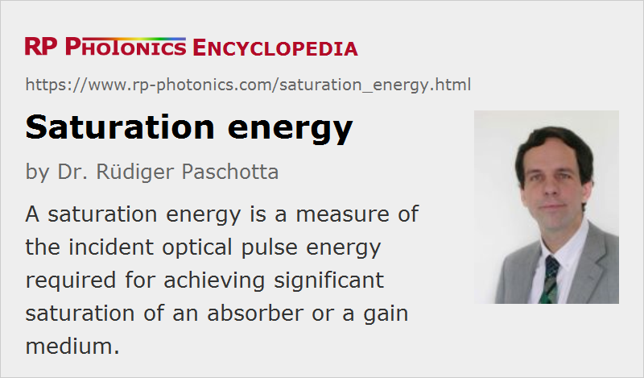

Saturation Energy
Definition: a measure of the incident optical pulse energy required for achieving significant saturation of an absorber or a gain medium
German: Sättigungsenergie
Category: physical foundations
Formula symbol: Esat
Units: J
How to cite the article; suggest additional literature
Author: Dr. Rüdiger Paschotta
The saturation energy of a laser gain medium is the pulse energy of an incident short signal pulse which leads to a reduction in the gain to 1/e (≈ 37%) of its initial value. Similarly, the saturation energy of a saturable absorber is defined.
Usually, the gain or loss is assumed to be small, i.e. input and output pulse energies are similar. (In the case of large gain, the quantity can be related to the input or output pulse energy; the latter is more common for amplifiers.) The pulse duration is assumed to be so short (typically shorter than the upper-state lifetime) that both spontaneous emission and the addition of energy from the pump source are negligible.

The saturation fluence is the saturation energy per unit area.
For a low-gain laser amplifier, saturation fluence and energy can be calculated according to
where h ν is the photon energy at the signal wavelength, σem and σabs are the emission and absorption cross sections at the emission wavelength, and A is the mode area. The quantity σabs is zero for four-level gain media (exhibiting no reabsorption on the laser transition) but should not be forgotten for quasi-three-level gain media.
When N passes of a pulse through an amplifier medium are arranged, an effective saturation energy can be defined, which is reduced by a factor N.
These quantities can be defined in an analogous way for saturable absorbers. For example, a pulse with a fluence equal to the saturation fluence reduces the saturable loss of a SESAM to 1/e of its initial value.
Note that the saturation fluence of a saturable absorber does not depend on the thickness of the absorber layer, unless the thickness is so large that the fluence is reduced substantially within the device.
Importance of the Saturation Energy
The saturation energy plays an important role in various areas of laser physics and laser design. Some examples are:
- It determines the pulse energy required for extracting most of the stored energy from a gain medium of an amplifier. A problem with some media having low emission cross sections is that the saturation fluence is higher than the damage fluence, so that complete energy extraction is not possible, except with multiple passes through the gain medium.
- The saturation energy determines the relation between gain and stored energy: the logarithmic gain coefficient of a low-gain four-level laser amplifier equals the stored energy divided by the saturation energy.
- The pulse energy obtained from a Q-switched laser can not be much higher than the saturation energy, except if the gain is very high. Particularly for passive Q switching, the saturation energy has a strong impact on the pulse energy and pulse repetition rate.
- The ratio of pulse energy and saturation energy of a saturable absorber, as used e.g. in a mode-locked laser, is called the saturation parameter. It determines how strong the saturation by a single pulse is, and is one of the most important design parameters of a passively mode-locked laser. Its value depends on both the saturation fluence of the absorber and the mode area on the absorber in the laser resonator.
Questions and Comments from Users
Here you can submit questions and comments. As far as they get accepted by the author, they will appear above this paragraph together with the author’s answer. The author will decide on acceptance based on certain criteria. Essentially, the issue must be of sufficiently broad interest.
Please do not enter personal data here; we would otherwise delete it soon. (See also our privacy declaration.) If you wish to receive personal feedback or consultancy from the author, please contact him e.g. via e-mail.
By submitting the information, you give your consent to the potential publication of your inputs on our website according to our rules. (If you later retract your consent, we will delete those inputs.) As your inputs are first reviewed by the author, they may be published with some delay.
See also: gain saturation, saturable absorbers, saturation power, transition cross sections, gain
and other articles in the category physical foundations
|  |
If you like this page, please share the link with your friends and colleagues, e.g. via social media:
These sharing buttons are implemented in a privacy-friendly way!